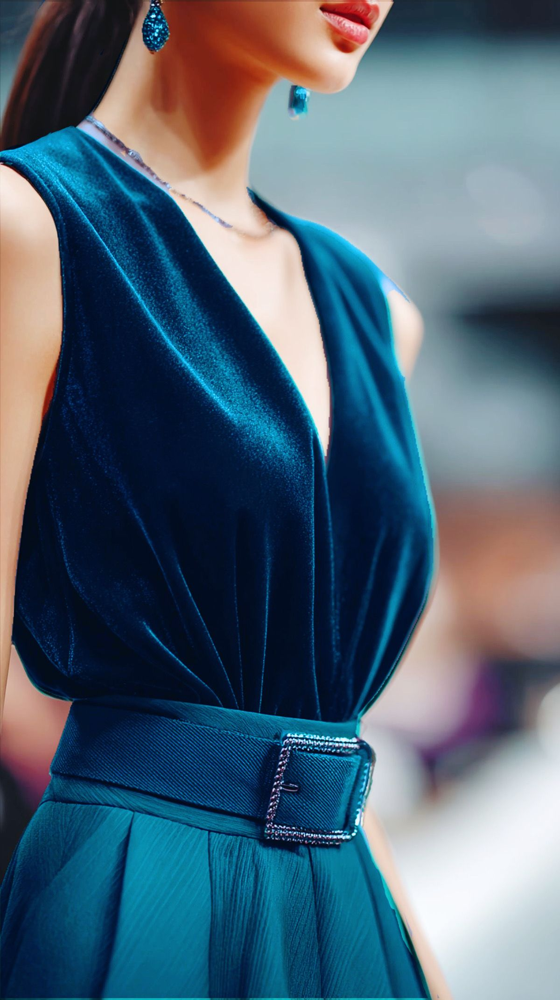
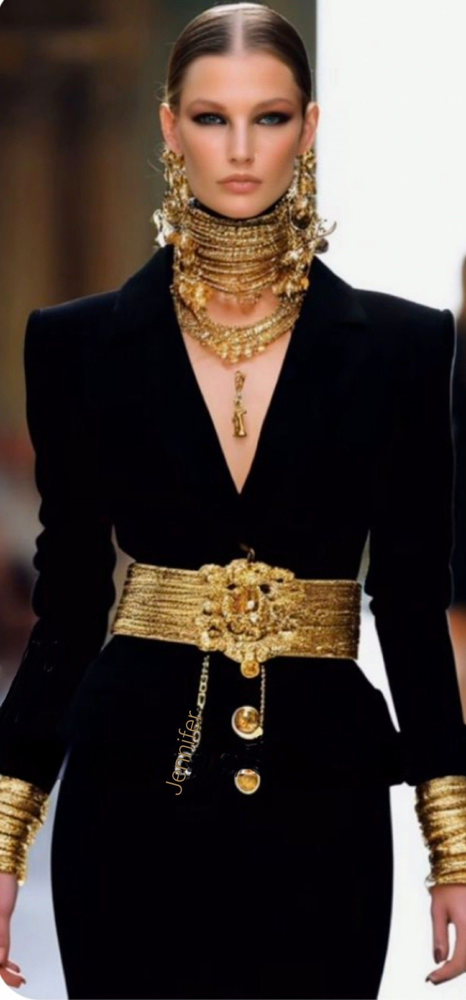
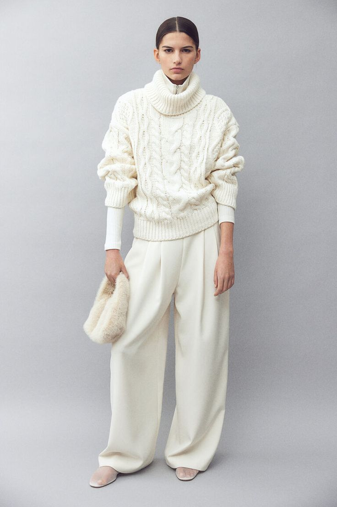
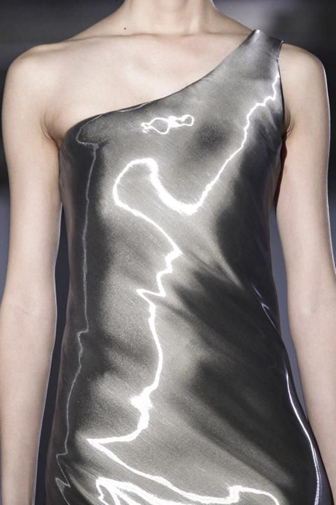

This year, we leave behind the "sad beige" era for high-contrast textures and emotive colors.

The 2026 color of the year. A fluid fusion of dark blue and aqua green that signals redirection.

80s-inspired decadence makes a return with sculpted shoulders and bold yellow gold accents.

Story-driven fashion featuring oversized cable knits, lace details, and romantic academia vibes.

Futuristic gradients and chrome finishes inspired by the intersection of AI and human craft.